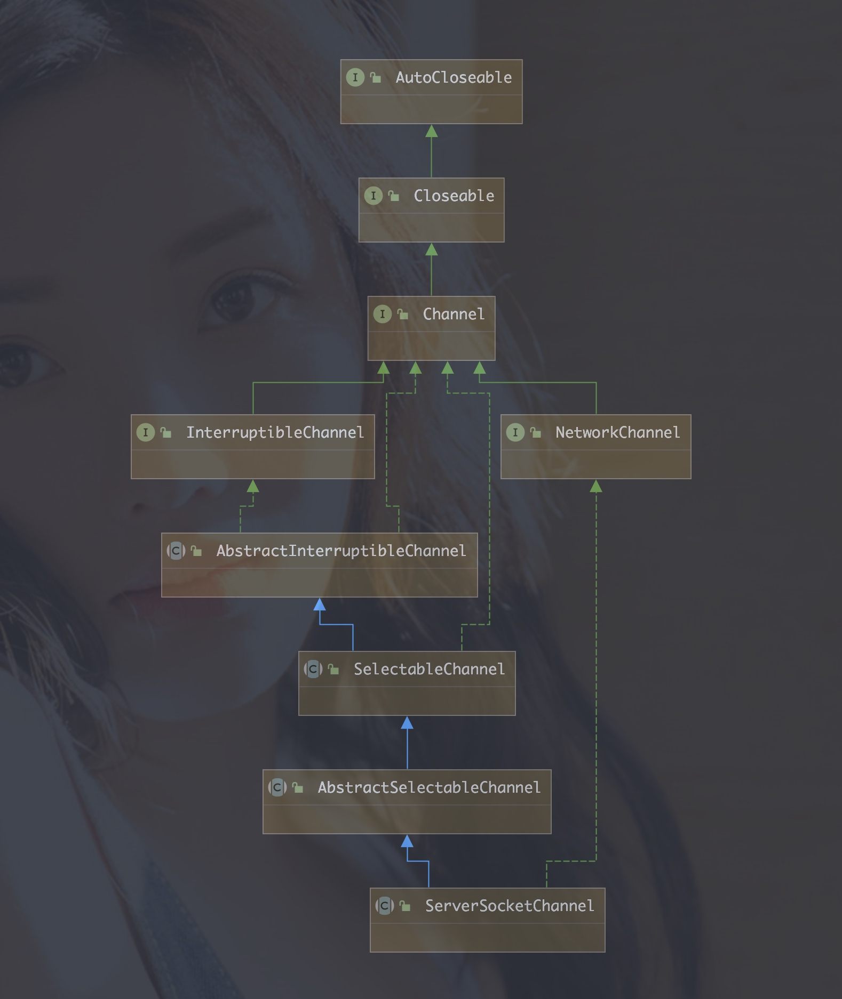

java.nio 包提供了非阻塞的通信能力
所有处于阻塞状态的线程的共同特征是：放弃 CPU ,暂停运行，只有等到导致阻塞的原因消除，才能恢复运行；或者被其他线程中断，该线程退出阻塞状态，并且抛出 InterruptedException异常
线程执行了 Thread.sleep(int n) 方法，线程放弃 CPU ，睡眠 n 毫秒之后，恢复运行。
线程无法获取要执行代码的同步锁，进入阻塞状态
线程执行一个对象的 wait()方法，进入阻塞状态，直至其他线程唤醒该对象
线程执行 IO 操作或进行远程通信时，会因为等待相关资源进入阻塞状态
请求与服务器建立连接时会进入阻塞状态
线程从 socket 的输入流读取数据时，没有足够的数据，就会进入阻塞状态，直到读到了足够欧的数据，或者到达输入流的末尾，或出现异常，才会从输入流的 read()方法返回或者中断
线程向 socket 的输出流写数据时，肯能会进入阻塞状态
调用 socket 的 setSoLinger()方法设置了关闭 Socket 的延迟时间，那么线程执行 socket 的 close() 方法时，会进入阻塞状态
服务器程序中线程遇到如下情况可能会进入阻塞状态
线程执行 ServerSocket 的 accept()方法，等待客户的连接，直到接收到了客户的连接才从 accept()方法返回
线程从 socket 的输入流读入数据时，可能会进入阻塞状态
线程向 socket 的输出流写数据时，可能会进入阻塞状态
JVM 会为每个线程分配独立的堆栈空间，工作线程数目越多，系统开销越大，而且增加了 JVM 调度线程的负担，增加了线程之间同步的复杂性，提高了线程死锁的可能性
工作线程的许多时间都浪费在阻塞IO操作上，JVM 需要频繁的转让 CPU 的使用权，使进入阻塞状态的线程放弃 CPU，再把 CPU 分配给处于可运行状态的线程。
因此，工作线程并不是越多越好，适量的工作线程会提高服务器的并发能力，但是超出了系统的负荷时，反而降低并发性能。
Java NIO 和 IO 之间第一个最大的区别是，IO 是面向流的，NIO 是面向缓冲区的。 Java IO 面向流意味着每次从流中读一个或多个字节，直至读取所有字节，它们没有被缓存在任何地 方。此外，它不能前后移动流中的数据。如果需要前后移动从流中读取的数据，需要先将它 缓存到一个缓冲区。 Java NIO 的缓冲导向方法略有不同。数据读取到一个它稍后处理的缓 冲区，需要时可在缓冲区中前后移动。这就增加了处理过程中的灵活性。但是，还需要检查 是否该缓冲区中包含所有需要处理的数据。而且，需确保当更多的数据读入缓冲区时，不要覆盖缓冲区里尚未处理的数据。
通道 channel 用来连接缓冲区与数据源
ServerSocketChannel
通过对类关系图的查看，我们可以看到 SocketChannel 和 ServerSocketChannel 父类几乎 是一样的，都有 AbstractInterruptibleChannel、SelectableChannel、AbstractSelectableChannel。
java.nio.channels.Channel 接口只声明了两个方法
isOpen() 判断通道是否打开
close() 关闭通道
AbstractInterruptibleChannel 表示可异步关闭和中断的 Channel
1、实现 InterruptibleChannel 接口的 Channel 支持异步关闭：如果一个线程IO 阻塞在一个可中断的 Channel，另一个线程可以执行 channel 的 close 方法。这将导致阻塞线程收到 AsynchronousCloseException 异常
2、实现 InterruptibleChannel 接口欧的 Channel 支持中断：如果一个线程 IO 阻塞在一个 可中断的 Channel，另一个线程可以执行阻塞线程的 interrupt 方法。浙江导致 Channel 关闭，阻塞线程收到 ClosedByInterruptException 异常，阻塞线程将是 interrupted 状态
3、如果线程已经中断，然后在 Channel 执行 阻塞 IO 操作，channel 将关闭，线程将立即收到 ClosedInterruptException 异常，且中断状态会保持。
怎么实现线程中断时关闭 channel 的呢？可不能指望着调用者调用 thread.interrupt() 之后，再去调用 channel.close() 方法。
我们看下 Thread 源码中的这一段
/* The object in which this thread is blocked in an interruptible I/O
* operation, if any. The blocker's interrupt method should be invoked
* after setting this thread's interrupt status.
*/
private volatile Interruptible blocker;
private final Object blockerLock = new Object();
/* Set the blocker field; invoked via sun.misc.SharedSecrets from java.nio code
*/
void blockedOn(Interruptible b) {
synchronized (blockerLock) {
blocker = b;
}
}
public interface Interruptible {
void interrupt(Thread var1);
}
blockedOn 方法可以设置 blocker 字段
public void interrupt() {
if (this != Thread.currentThread())
checkAccess();
synchronized (blockerLock) {
Interruptible b = blocker;
if (b != null) {
interrupt0(); // Just to set the interrupt flag
b.interrupt(this);
return;
}
}
interrupt0();
}
这两段代码允许我们在线程 interrupt()的时候调用 Interruptible blocker 这个接口(需要自己实现)
然后我们把目光再次集中到 AbstractInterruptibleChannel
protected final void begin() {
if (interruptor == null) {
interruptor = new Interruptible() {
public void interrupt(Thread target) {
synchronized (closeLock) {
if (!open)
return;
open = false;
interrupted = target;
try {
// 关闭channel
AbstractInterruptibleChannel.this.implCloseChannel();
} catch (IOException x) { }
}
}};
}
blockedOn(interruptor);
Thread me = Thread.currentThread();
if (me.isInterrupted())
interruptor.interrupt(me);
}
给 AbstractInterruptibleChannel 里的 Interruptible 接口类型的成员变量 interruptor 赋予初值，在赋值语句中，被赋予的值是一个实现了 Interruptible 接口的匿名类
在这个匿名类的 interrupt 方法中做了两件事
保存当前被中断的线程是谁
对Channel 进行了关闭
接下来，这个 interruptor 设置给当前调用 begin 的线程，按照我们之前对 Thread 类的查看我们会了解到，Thread 的 interrupt 方法除了常规的 interrupt 操作之外，还对线程 Interruptible 接口类型的成员变量 blocker 的 interrupt 方法的调用。
所以线程在中断的时候，除了线程常规的 interrupt 操作外，还有可能对channel进行关闭。
protected final void end(boolean completed) throws AsynchronousCloseException {
// 清空线程的 blocker 字段
blockedOn(null);
// 如果线程被中断，则在 begin 里面初始化的 Interruptible 对象的 interrupt 方法里面设置了 interrupted 变量为被中断的线程
Thread interrupted = this.interrupted;
if (interrupted != null && interrupted == Thread.currentThread()) {
interrupted = null;
// 如果被中断，则抛出 ClosedByInterruptException
throw new ClosedByInterruptException();
}
// 如果被 closse，则抛出 AsynchronousCloseException
if (!completed && !open)
throw new AsynchronousCloseException();
}
SelectableChannel则在AbstractInterruptibleChannel的基础之上，加入对SelectionKey 注册到 selector 上的支持，SelectableChannel 本身是个抽象类而且基本都是抽象方法，并没有什么实现。
SelectableChannel 支持阻塞IO、非阻塞IO，他有两个子类：
ServerSocketChannel: 相当于 ServerSocket 的替代类，支持阻塞通信和非阻塞通信,通过 ServerSocketChannel.open()创建
SocketChannel : 相当于 Socket 的替代类，支持阻塞通信和非阻塞通信，通过 SocketChannel.open()创建
SelectableChannel可以向 Selector 注册读就绪和写就绪事件。
主要方法：
configureBlocking(boolean block) block 为 true表示 阻塞模式，false非阻塞模式，默认阻塞模式，isBlocking()方法返回它的阻塞模式
SelectionKey register(Selector sel, int ops)
SelectionKey register(Selector sel, int ops, Object attachment)
MyHandler handler = new MyHandler();
SelectionKey key = socketChannel.register(selector, SelectionKey.OP_READ, handler);
之后 可以从SelectionKey中获取 handler,然后执行handler相关处理方法 ：
MyHandler handler = (MyHandler) key.attachment()
接下来我们看下 register 方法是如何实现的,在其实现类 AbstractSelectableChannel 中
public final SelectionKey register(Selector sel, int ops,
Object att)
throws ClosedChannelException
{
synchronized (regLock) {
if (!isOpen())
throw new ClosedChannelException();
if ((ops & ~validOps()) != 0)
throw new IllegalArgumentException();
if (blocking)
throw new IllegalBlockingModeException();
SelectionKey k = findKey(sel);
if (k != null) {
k.interestOps(ops);
k.attach(att);
}
if (k == null) {
// New registration
synchronized (keyLock) {
if (!isOpen())
throw new ClosedChannelException();
k = ((AbstractSelector)sel).register(this, ops, att);
addKey(k);
}
}
return k;
}
}
首先进行检查，比如通道是否打开，注册键值是否有效，通道是否非阻塞模式等等，然 后检查数组 keys 中的 key 能否在 selector 找到，找到则直接修改 key 关注的键值并替换附件， 没找到，则在 selector 中注册这个 key，并加入到内部 SelectionKey 的数组 keys 中。
SelectionKey.OP_ACCEPT: 接收连接就绪事件，表示至少有了一个客户连接，服务器可以接收这个连接
SelectionKey.OP_CONNECT: 连接就绪事件，表示客户端与服务器的连接已经建立成功
SelectionKey.OP_READ: 度就绪事件，表示输入流中已经有了可读数据，可以执行读操作了
SelectionKey.OP_WRITE: 写就绪事件，表示已经可以向输出流写数据了。
SocketChannel提供了 读数据和写数据的方法
read(ByteBuffer buffer): 读数据，把他们放到参数指定的 ByteBuffer中
write(ByteBuffer buffer): 把参数指定的ByteBuffer中的数据发送出去
CHANNEL
OP_READ
OP_WRITE
OP_CONNECT
OP_ACCEPT
服务器ServerSocketChannel
Y
服务器SocketChannel
Y
Y
客户端SocketChannel
Y
Y
Y
代表 SocketChannel、ServerSocketChannel向 Selector 注册事件的句柄，包括接收连接就绪事件、连接就绪事件、读事件就绪、写事件就绪
OP_READ : 当操作系统读缓冲区有数据可读时就绪。并非时刻都有数据可读，所 以一般需要注册该操作，仅当有就绪时才发起读操作，有的放矢，避免浪 费 CPU。
OP_WRITE : 当操作系统写缓冲区有空闲空间时就绪。一般情况下写缓冲区都有空 闲空间，小块数据直接写入即可，没必要注册该操作类型，否则该条件不 断就绪浪费 CPU;但如果是写密集型的任务，比如文件下载等，缓冲区很 可能满，注册该操作类型就很有必要，同时注意写完后取消注册。
OP_CONNECT : 当 SocketChannel.connect()请求连接成功后就绪。该操作只给客户端 使用。
OP_ACCEPT : 当接收到一个客户端连接请求时就绪。该操作只给服务器使用。
以下情况下 SelectionKey 对象会失效：
程序调用 SelectionKey 的 cancel() 方法
关闭 与 SelectionKey 关联的 Channel
与 SelectionKey 关联的 selector 被关闭
主要方法：
SelectableChannel channel()
Selector selector()
boolean isValid()
void cancel()
int interestOps()
SelectionKey interestOps(int ops)
boolean isReadable()
boolean isWritable()
boolean isConnectable()
boolean isAcceptable()
attach(Object obj)
Object attachment()
Selector 多路复用器提供选择已经就绪事件的能力。
为 ServerSocketChannel 监控接收连接就绪事件，为 SocketChannel 监控连接就绪、写就绪、读就绪事件。
一个Selector对象会包含 3中类型 SelectionKey集合：
all-keys: 当前所有向 Selector 注册的 SelectionKey 的集合， Selector 的 keys() 方法返回该集合
selected-keys: 相关事件已经被 Selector 捕获的 SelectionKey 的集合，Selector的 selectedKeys()方法返回该集合
cancelled-keys: 已经被取消的 SelectionKey 集合，暂无访问该集合的方法。
执行 Selector 的 select() 方法时，与 SelectionKey 相关的事件发生了，这个 SelectionKey 就被加入到 selected-keys 集合中。
主要方法：
static Selector open() 创建 Selector对象
isOpen() 是否处于打开状态，创建 Selector 之后就处于打开状态，直到 执行close()方法
Set keys() 返回 all-keys集合
int selectNow() 返回相关事件已经发生的 SelectionKey 对象数目
int select() 或 int select(long timeout) 返回相关事件已经发生的SelectionKey对象的数目，如果一个都没有进入阻塞状态，直到出现以下情况之一：
至少有一个 SelectionKey 的相关事件已经发生
其他线程调用了 Selector 的 wakeup()方法，导致执行 select()方法的线程立即从 select()方法中返回
当执行 sselect()方法的线程被其他线程中断
超出了等待时间
Selector wakeup() 唤醒执行 Selector 的 select()方法的线程
close() 关闭 Selector，使它占用的所有资源都被释放，所有与Selector 关联的 SelectionKey 都被取消
我们着重看一下 open() 方法
public static Selector open() throws IOException {
return SelectorProvider.provider().openSelector();
}
通过 SelectorProvider.provider()静态方法，获取到 SelectorProvider，首次获取时会通过 配置等方式注入，若没有配置，则使用 DefaultSelectorProvider 生成。
不同平台的 DefaultSelectorProvider 实现是不一样的，例如 Linux 平台的实现是 EpollSelectorProvider ，通过openSelector() 方法，拿到 Selector 的实现 EpollSelectorImpl
SelectorImpl 的原始 Java 文件可以在 jdk\src\share\classes\sun\nio\ch 下找到。
在创建 SelectorImpl 首先会初始化2个 HashSet，publicKeys 存放用于一个存放所有注册的 SelectionKey，publicSelectedKeys 用于存放已就绪的 SelectionKey
private Set<SelectionKey> publicKeys;
private Set<SelectionKey> publicSelectedKeys;
protected SelectorImpl(SelectorProvider var1) {
super(var1);
if (Util.atBugLevel("1.4")) {
this.publicKeys = this.keys;
this.publicSelectedKeys = this.selectedKeys;
} else {
this.publicKeys = Collections.unmodifiableSet(this.keys);
this.publicSelectedKeys = Util.ungrowableSet(this.selectedKeys);
}
}
当代码执行 select() 方法的时候，加载已就绪的文件描述符
1、调用 native 方法获取已就绪的文件描述符。
在 updateRegistrations 方法中，更新 epoll 事件，实际调用 epollCtl 加入到 epollfd 中
调用 epollWait 方法，获取到已就绪的文件描述符，存放在 pollArrayAddress 地址中
2、调用 updateSelectedKeys 更新已就绪事件的 SelectorKey，当获取到已就绪的 SelectionKey 后，我们就可以在 Java 代码中遍历他们，根据 SelectionKey 的事件类型决定需要执行的具体逻辑。
3、使用 processDeregisterQueue 方法会遍历所有调用了 key.cancel 方法的 key 并执行实 际的取消注册。因为考虑到在“获取已就绪的文件描述符(poll 方法)”期间可能会有 channel 被关闭，因此需要再次调用删除取消 key。
缓冲区从两个方面提高 IO 效能 ：
减少实际的物理读写次数
缓冲区在创建的时候被分配内存，这块缓冲区一直被重用，减少了动态分配内存和回收内存的次数。
以下是Buffer 类的层次结构
Buffer (java.nio)
|---IntBuffer (java.nio)
|---FloatBuffer (java.nio)
|---CharBuffer (java.nio)
|---DoubleBuffer (java.nio)
|---ShortBuffer (java.nio)
|---LongBuffer (java.nio)
|---ByteBuffer (java.nio)
所有的缓冲区都由以下属性
容量 capacity: 表示该缓冲区可以保存多少数据
极限 limit: 表示缓冲区当前的终点，不能对缓冲区中超过极限的区域进行读写操作。极限是可以修改的，这有利于缓冲区的重用。
位置 position: 表示缓冲区中下一个读写单元的位置，每次读写缓冲区的数据时，都会改变该值，为下一次读写数据做准备
以上三个属性的关系为 容量 >= 极限 >= 位置 >= 0
Buffer 提供了用于改变以上 3 个属性的方法：
clear() 把极限设为容量，再把位置设为 0
flip() 把极限设置为位置，再把位置设置为 0
rewind() 不改变极限，把位置设为 0
Buffer类的其他方法：
remaining()方法返回缓冲区的剩余容量 = 极限 - 位置
compact() 删除缓冲区内 从 0 到当前位置 position 的内容，然后把从当前位置 position 到极限 limit 的内容复制到 0 到 limit - position的区域内，当前位置 position 和 极限 limit 的取值也作相应的变化。
get() 相对读数据，从当前位置读取一个单元的数据，读完后位置 +1
get(index) 从指定位置 index 读取一个单元的数据
put()
put(index)
由于 Buffer 是一个冲向类，不能直接实例化，通过如下方式获取
allocate(int capacity) 返回一个 ByteBuffer 对象，参数 capacity 指定缓冲区的容量
directAllocate(int capacity) 返回ByteBuffer 对象，参数 capacity 指定缓冲区的容量，推荐缓冲区较大且长期存在或者需要重用的时候，使用这种缓冲区。
HeapByteBuffer 与 DirectByteBuffer，在原理上，前者可以看出分配的 buffer 是在 heap 区域的，其实真正 flush 到远程的时候会先拷贝到直接内存，再做下一步操作;在 NIO 的框 架下，很多框架会采用 DirectByteBuffer 来操作，这样分配的内存不再是在 java heap 上，经 过性能测试，可以得到非常快速的网络交互，在大量的网络交互下，一般速度会比 HeapByteBuffer 要快速好几倍。
直接内存(Direct Memory)并不是虚拟机运行时数据区的一部分，也不是 Java 虚拟机规范中定义的内存区域，但是这部分内存也被频繁地使用，而且也可能导致 OutOfMemoryError 异常出现。
NIO 可以使用 Native 函数库直接分配堆外内存，然后通过一个存储在 Java 堆里面的 DirectByteBuffer 对象作为这块内存的引用进行操作。
DirectByteBuffer继承自 MappedByteBuffer 能把缓冲区和文件的某个区域直接映射。
这样能在一些场景中显著提高性能， 因为避免了在 Java 堆和 Native 堆中来回复制数据。
对垃圾回收停顿的改善。由于堆外内存是直接受操作系统管理而不是JVM，所以当我们使用堆外内存时，即可保持较小的堆内内存规模。从而在GC时减少回收停顿对于应用的影响。
提升程序I/O操作的性能。通常在I/O通信过程中，会存在堆内内存到堆外内存的数据拷贝操作，对于需要频繁进行内存间数据拷贝且生命周期较短的暂存数据，都建议存储到堆外内存。
直接内存申请空间耗费更高的性能，当频繁申请到一定量时尤为明显
Java NIO 和 IO 之间第一个最大的区别是，IO 是面向流的，NIO 是面向缓冲 区的。
Java IO 的各种流是阻塞的，Java NIO 的非阻塞模式，使一个线程从某通道发送请求读取数据，但是它 仅能得到目前可用的数据，如果目前没有数据可用时，就什么都不会获取，而不 是保持线程阻塞，所以直至数据变的可以读取之前，该线程可以继续做其他的事情。